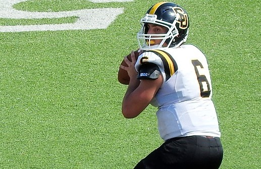

RGV’S BEST FOOTBALL RECRUITS
Can 2018 class match talent of previous Valley prospects?

BY TJ GARCIA
As the February signing period fast approaches for football (and soccer, but we're going to stick to football today), I'm reminded that over the last several years. the RGV has had some big-time commitments.
OK sure, we're not becoming a Houston-like hotbed for D1 football recruiters, but the Valley has had some small but potent crops of players sign in recent years. The RGV has been able to send football players to stout programs all around
Texas and a few outside of the state and into the power-five conferences.
We are not a volume producer of college scholarship football players, or walk-ons for that matter. That's just a fact of life.
But two years ago, the football class was highlighted by the RGV's all-time leading rusher in Trevor Speights who went to Stanford, and McHi's Josh McGowen, a state track champion that accepted a football scholarship to play at Stephen
F. Austin. That's not easy to top.
To my best count, there were about 41+ young men from the RGV on college football rosters this past fall. That would include D1, D2, D3 and JUCO. Many did not see action, but there were some standouts.
This year, there's a small group of elite Valley football talents that will get into programs via scholarships, financial aid packages or as walk-ons. McAllen Memorial's Kelechi Nwachuku already signed with UTSA. I suspect McHi's Gunnar
Henderson to follow suit in February as he's been offered by Yale, Louisville and others. February 7 through April 1 is NCAA D1 signing period.
And there will be others from the some of the Valley's top football programs such as McAllen Memorial, Weslaco East, Harlingen, Edinburg Vela, Mercedes and San Benito among others that will also sign - many after the D1's make their picks.
The D2s and D3's often wait for the dust to settle and then start making offers to the next best athletes available in late February, March and throughout the spring.
Here are a few (and definitely not all) Valley players that made an impact last fall with their collegiate football teams:
DAVID ANZALDUA, OL, 6-foot-6, 340, R-Jr., Ed North-UTSA. Played major minutes in eight games for the 6-5 Roadrunners. Has a great chance to start next year.
FRED HOVER, QB, 5-9, 190, Jr. McHi-Southwestern. Starting QB named first-team ASC All-Conference (D3). He had 3,000 total yards and 30 touchdowns for 6-4 Pirates.
KRISTOV MARTINEZ, K, 5-6, 140, Sr., Edinburg High-Texas A&M-Commerce. All-American kicker for D2 National Champion Lions. Became school's all-time leading scorer; 24-28 on FGs in 2017.
MIKE MENDEZ, OL, 6-4, 295, So., Los Fresnos-Purdue. Rotated into the lineup all-season long and logged lots of plays for Big Ten school. A 7-6 team that won Foster Farms Bowl game.
TREVOR SPEIGHTS, RB, 5-11, 205, So., McAllen Memorial-Stanford. Backed-up Heisman finalist Bryce Love. Got spot game action (149 yds), played special teams. Looks to start next season.
SANTOS VILLARREAL, LB, 5-11, 195, So., Mission Vets-Mary Hardin-Baylor. Started 8 games, played in 15 for D3 national runner up 14-1 Crusaders. 56 tackles, 4 interceptions.